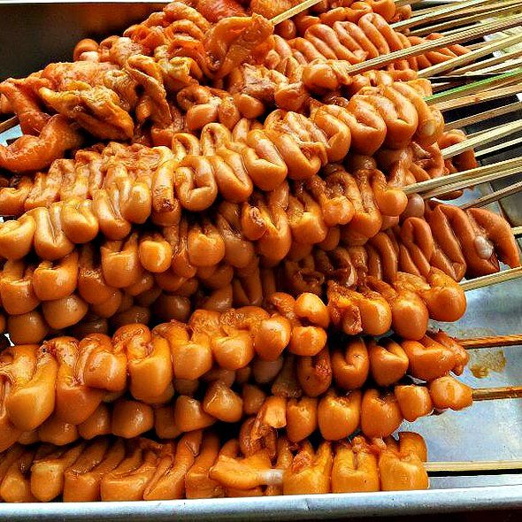
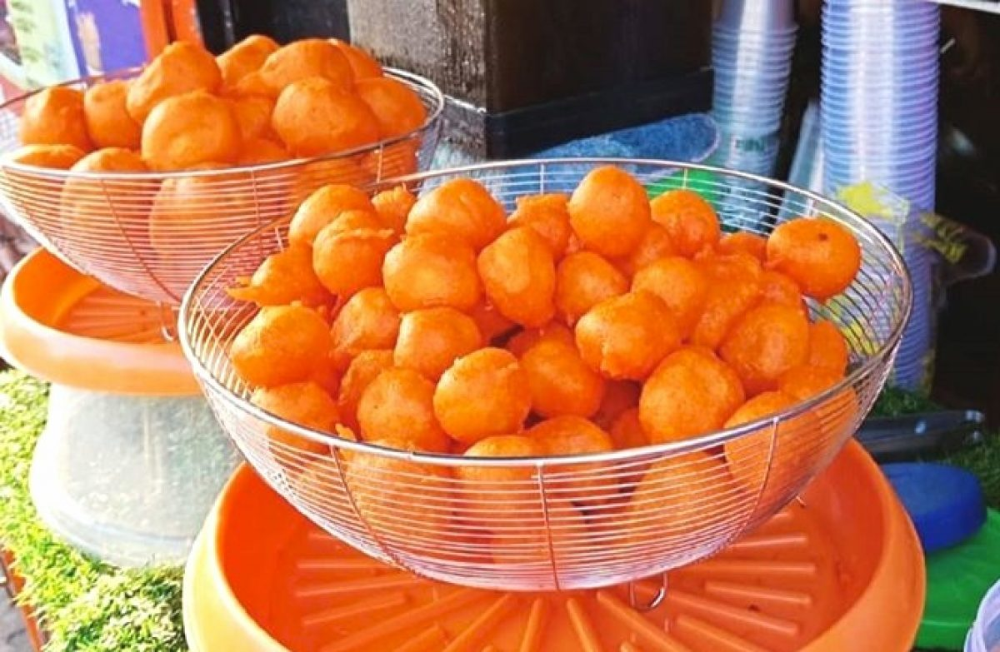
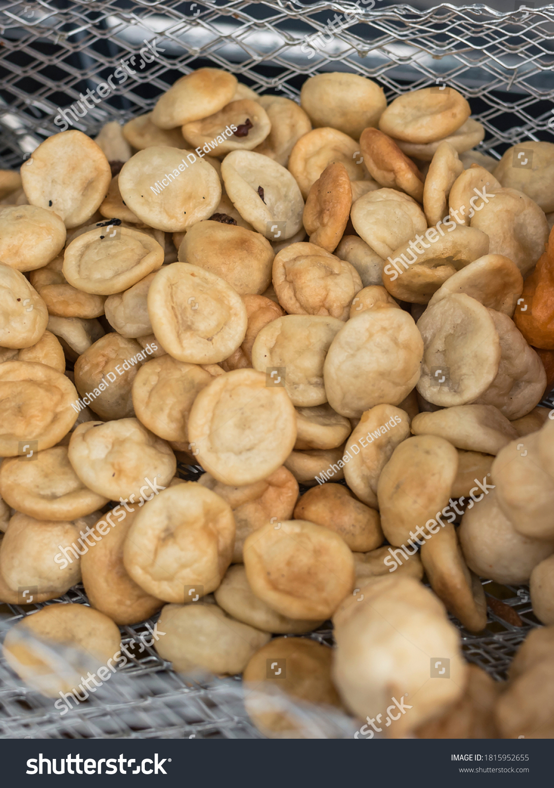
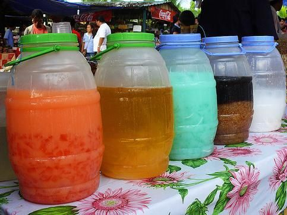
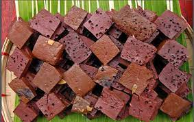
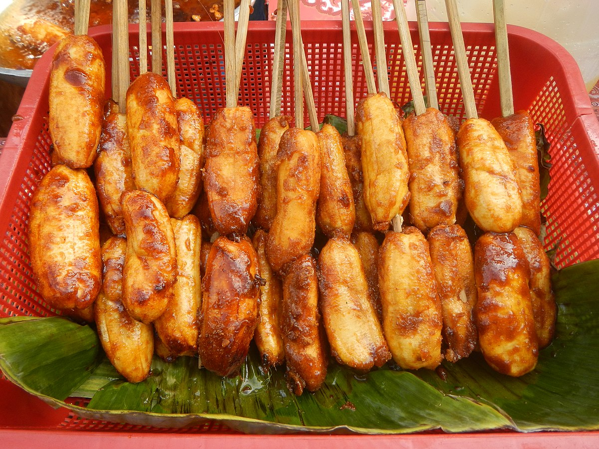
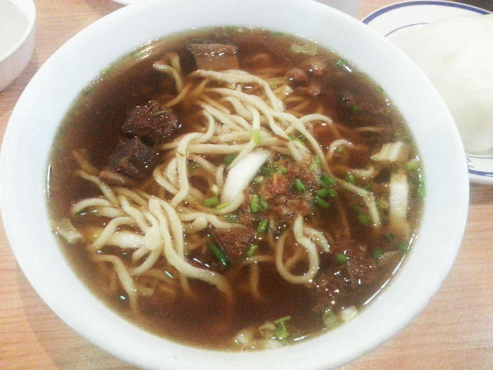
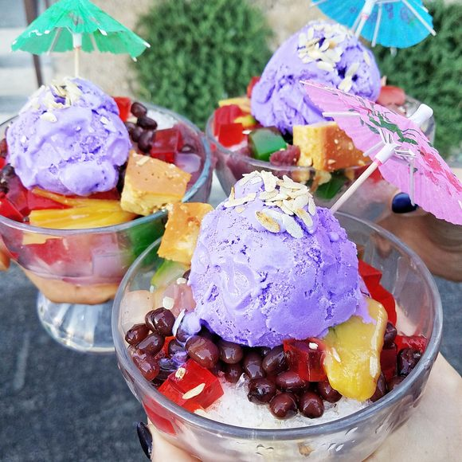

We make simple food excel at its best. Simply tasty, that will cater for all types of people. Experience foods and be delighted with it.
OurMenu

Isaw
Made from chicken's intestine cooked by ihaw and serve with vinegar.

KwekKwek
Made from hard-boiled quail eggs dipped in a bright orange batter, then deep-fried.

Fishball
Made from rounded meat balls made from fish paste which are then boiled or deep fried.

Palamig
It is contains sago or tapioca pearls and gulaman or jellies and flavored with syrup from different fruit extracts.

Betamax
Made from dried chicken blood that is shaped into cubes and cooked on the grill. The blood is extracted from the chicken and set aside to cool.
Kikiam
Kikiam consists of a mixture of ingredients like ground pork and shrimp, along with many other spices and seasonings. The process involved in cooking is steaming, and then deep frying until you achieve a crispy and golden brown roll.
Barbeque
its use of different types of meat, including pulled pork, pork ribs, burnt ends, smoked sausage, beef brisket, beef ribs, smoked/grilled chicken, smoked turkey, and sometimes fish and serve with saucesor vinegar.

Bananacue
Made of fried banana on bamboo skewers and the most consumed as a mid-afternoon snack.“Saba” banana is the only key element of this.
Beef pares
Cubed beef briskets cooked with spices and tenderized to perfection. The aroma of this dish alone is enticing.

Mami
Made with egg noodles also known as miki and flavorful chicken broth topped with fried garlic and chopped green onions or chives.

Halohalo
Concoction of various sweet treats, crushed ice and milk that are put together to culminate into one great cold treat.
Saging con yelo
A simple yet very satisfying hot and cold Filipino dessert. A layer of soft shaved ice, sweetened bananas cooked in syrup with vanilla essence, small sago, and top with creamy evaporated milk.